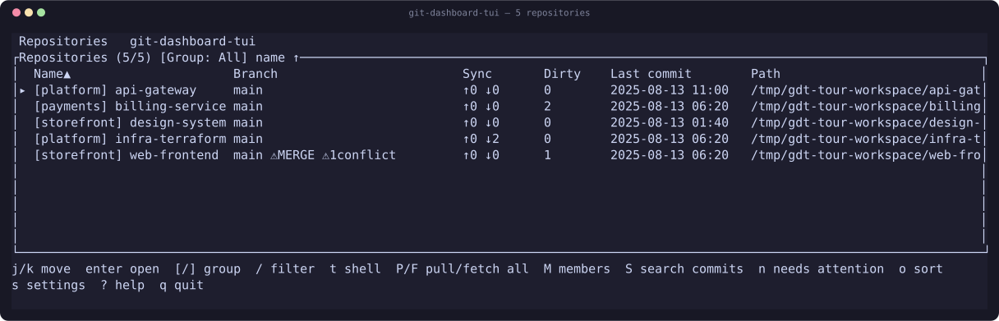

Find your next task across repositories, from one terminal.
散らばったリポジトリから、次に取りかかる場所が見える。

curl -fsSL https://raw.githubusercontent.com/orapli/git-dashboard-tui/main/install.sh | shLinux (x86_64, ARM64), macOS (Apple Silicon, Intel) and Windows (x64). Verifies the published SHA-256 and never uses sudo. The shell installer supports Linux/macOS; Windows uses the release ZIP.
This site documents development main; the installer downloads the latest release. / このサイトはmainの開発版、インストーラは最新リリースを対象とします。 Version details · バージョンの説明
Branch, ahead/behind, uncommitted changes, open PRs and CI, for as many checkouts as you have registered.
It fetches and pulls. It never stages, commits, branches, checks out or pushes — so it is safe to leave open.
Config keys that can execute commands are neutralised on every git call, and escape sequences are stripped from repository content before it reaches your terminal.
English and Japanese throughout, Catppuccin Mocha and Latte, and click to sort, select and compare.